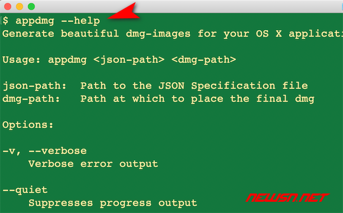
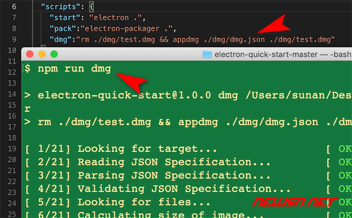
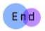

# electron程序，如何利用appdmg打包生成dmg安装包？
苏南大叔再次开始更新 electron相关文章，本文种给大家带来的是：如何利用 appdmg生成 dmg安装包。在 macos的世界里面，安装一个文件是非常简单的事情，并没有 win下面哪些繁琐步骤。最常见的安装包格式 dmg，打开就是一个简单界面，把左边的图标拖动到右边的快捷方式上就算安装完成了。对，就是这么简单。那么，对于 electron生成的 .app文件来说，如何才能拥有这样的安装界面呢？这就是本文所要描述的问题。
Electron小伙伴，都在这里等你 (opens new window)
electron程序，如何利用appdmg打包生成dmg安装包？（图8-1）
本文测试环境：mac/electron@5.0.3/appdmg0.6.0。本文特约龙套是 electron-quick-start，用 electron-packager打包成了 .app文件，本文的任务就是把 .app文件再包装成 .dmg文件。本文假设您，已经利用 electron-packager正确打包好了龙套项目的 .app文件。位置信息是:
Bash
./electron-quick-start-darwin-x64/electron-quick-start.app
# 全局安装 appdmg
appdmg的 github页面地址如下所示，您可以找到更详细的描述内容：
- https://github.com/LinusU/node-appdmg
Electron小伙伴，都在这里等你 (opens new window)
electron程序，如何利用appdmg打包生成dmg安装包？（图8-2）
因为 appdmg的角色和 electron-packager的角色类似，所以苏南大叔推荐您使用 -g全局安装 appdmg。命令行如下：
Bash
npm install -g appdmg
Electron小伙伴，都在这里等你 (opens new window)
electron程序，如何利用appdmg打包生成dmg安装包？（图8-3）
可以通过下面的命令，获得 appdmg的版本号。截至到发稿，苏南大叔安装好的 appdmg的版本号是 0.6.0。
Bash
appdmg --version
Electron小伙伴，都在这里等你 (opens new window)
electron程序，如何利用appdmg打包生成dmg安装包？（图8-4）
Electron小伙伴，都在这里等你
electron程序，如何利用appdmg打包生成dmg安装包？（图8-5）
# 配置文件
对于 appdmg生成 .dmg文件这个事情来说，还需要一个 json配置文件。苏南大叔使用的测试配置文件如下：
{
"title": "MyApp",
"icon": "icns.icns",
"background": "bg.png",
"contents": [
{ "x": 380, "y": 170, "type": "link", "path": "/Applications" },
{ "x": 200, "y": 170, "type": "file", "path": "./../electron-quick-start-darwin-x64/electron-quick-start.app" }
],
"window": {
"size": {
"width": 580,
"height": 360
}
},
"format": "UDBZ"
}
# 准备文件
在上述配置中，苏南大叔还需要准备几样文件：
.icns图标文件。制作方式见：https://newsn.net/say/electron-icns.html.app可执行文件。制作方式可参考：https://newsn.net/say/electron-packager.htmlbg.png背景图片，这个图片可以自由设计，建议在合适的位置出现一个箭头，指示大家拖动图标。
# 目录结构
在 electron-quick-start-darwin-x64的同级目录，建立一个 dmg文件夹，下面放置如下相关文件。目录结构，如下图所示：
Electron小伙伴，都在这里等你 (opens new window)
electron程序，如何利用appdmg打包生成dmg安装包？（图8-6）
# 数值设置
另外，关于上述配置文件中的坐标信息。理论上来说，是需要自己手工不断调整的。不过其实也是有规律可循的。苏南大叔总结了几条规律，仅供参考：
width和height就是bg.png的宽度和高度。contents里面的y，指的就是图标中心点的位置。如果设置高度的一半的话，就可以保证图标在竖直最中间的位置。但是考虑到图标下面的文字信息，所以，可以考虑设置为高度一半，再剪掉一个向上的偏移量。
# 压缩格式
关于参数 format，就是压缩格式了。这里苏南大叔没有做具体测试。因为第一个测试结构，个人就挺满意的。据说还可以 format取值如下：
- UDRW - UDIF read/write image
- UDRO - UDIF read-only image
- UDCO - UDIF ADC-compressed image
- UDZO - UDIF zlib-compressed image
- UDBZ - UDIF bzip2-compressed image (OS X 10.4+ only)
- UFBI - UDIF entire image with MD5 checksum
- UDTO - DVD/CD-R master for export
- UDSP - SPARSE (grows with content)
- UDSB - SPARSEBUNDLE (grows with content; bundle-backed)
# 生成 dmg命令
命令格式如下：
Bash
appdmg <json文件路径> <dmg文件路径>
Electron小伙伴，都在这里等你
electron程序，如何利用appdmg打包生成dmg安装包？（图8-7）
但是考虑到实际的情况，会反复生成上述 .dmg文件，所以，推荐您设置命令如下：
Bash
rm -f ./dmg/test.dmg && appdmg ./dmg/dmg.json ./dmg/test.dmg
可以定义在 package.json里面的 script节点里面，命名为:dmg，便于使用 npm run dmg执行相关命令。
# 使用代码生成 dmg
# 基本姿势
如果不用命令行，而使用 node代码的话，也是可以生成 dmg的。基本姿势如下：
Js
const appdmg = require('appdmg');
const ee = appdmg({ source: 'test/appdmg.json', target: 'test.dmg' });
ee.on('progress', function (info) {
// info.current is the current step
// info.total is the total number of steps
// info.type is on of 'step-begin', 'step-end'
// 'step-begin'
// info.title is the title of the current step
// 'step-end'
// info.status is one of 'ok', 'skip', 'fail'
});
ee.on('finish', function () {
// There now is a `test.dmg` file
});
ee.on('error', function (err) {
// An error occurred
});
# 可选方案
这里主要需要配置的就是 ee对象，其实就是 appdmg的实例。
方案一，传递 json配置文件和 dmg的路径位置。
Js
const ee = appdmg({ source: 'test/appdmg.json', target: 'test.dmg' });
方案二，传递 json配置文件的内容和 dmg的路径位置。至于 basepath变量，直接忽略即可。
Js
const ee = appdmg({
target: 'test.dmg',
basepath: __dirname,
specification: {
"title": "Test Title",
// ...
}
});
# 执行方式
执行方式就是：
Bash
node test.js
# 最终成品
对于 electron-quick-start这里例子来说，生成的 dmg安装包的实验结果是 50m左右，体积上来说，在可接受的范围内。
electron程序，如何利用appdmg打包生成dmg安装包？（图8-8）
在苏南大叔的这几条测试中，这个最顶端的
title是没有显示的。这个issue在官方的列表中，也没看到描述，也许是苏南大叔自己的系统问题。暂无解决方案。
# 总结
生成 dmg安装包之后，这个安装文件就会显得高大上很多。更多 dmg相关的经验文字，请点击苏南大叔的博客：
- https://newsn.net/tag/dmg/
- https://newsn.net/tag/electron/

如果本文对您有帮助，或者节约了您的时间，欢迎打赏瓶饮料，建立下友谊关系。 本博客不欢迎：各种镜像采集行为。请尊重原创文章内容，转载请保留作者链接。
【苹果】苹果生态程序员QQ群【787907940】，等您来加入
【加群】加入QQ群【175454274】和大家一起讨论这个问题
【源码】本文代码片段及相关软件，请点此获取
【绝密】秘籍文章入口，仅传授于有缘之人 ** electron dmg**
文章来源：https://newsn.net/say/electron-appdmg.html